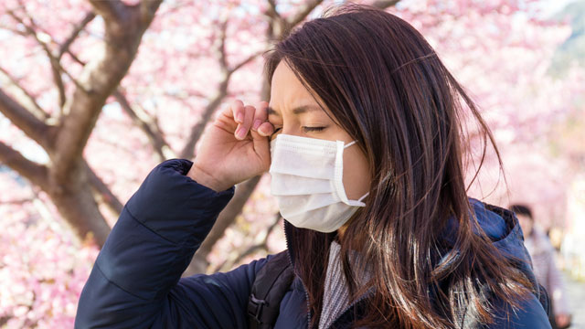
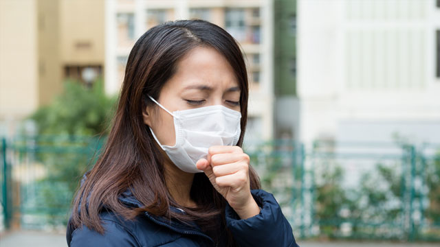

綠推手
3分鐘檢視
你是不是綠高手
今選綠健康
健康綠頻道
最要命的新國病 肺癌
台灣算不算醫療先進國家？很多人的答案是肯定的。但，在台灣一診斷出肺癌，近六成已是末期，導致肺癌的死亡人數居十大癌症之冠，也燒掉最多健保費用。新國病來襲，我們該如何對抗？
乾德門肺癌過世 醫師建議做「這個」檢查揪早期肺癌
藝人乾德門（乾爸）的經紀人宣布，罹患肺癌四期的乾爸於今（5）日凌晨四點多在台北新店的同仁醫院病逝，享壽74歲。肺癌是台灣常見的癌症，許多患者沒有抽菸習慣，甚至年紀很輕，還是難逃肺癌侵襲！預防肺癌，究竟該怎麼做？
肺癌新國病 醫師分享10招有效遠離
平均不到57分鐘就有一人死於肺癌，肺癌已成為台灣新國病。如何有效防範肺癌找上身，已成為民眾的新課題，新光醫院健康管理部主任高尚志醫師分享10招，讓你我都可以從日常生活，遠離肺癌的潛在威脅。

眼睛乾癢恐是空氣污染惹禍！巧用人工淚液保養
近年空氣污染嚴重，民眾大多關心空污對呼吸道的影響，卻忽略了對眼睛的傷害也不小！有時候，眼睛乾澀、搔癢可能就是空氣品質不良所致，但一般人不...

拒絕髒空氣 醫師教你用4原則挑選空氣清淨機
秋後嚴重空污來襲，民眾為求自保，紛紛緊急採購口罩、空氣清淨機，但若要抵禦空污影響，其實亦可透過「吃」來增強免疫力、防治肺部疾病。